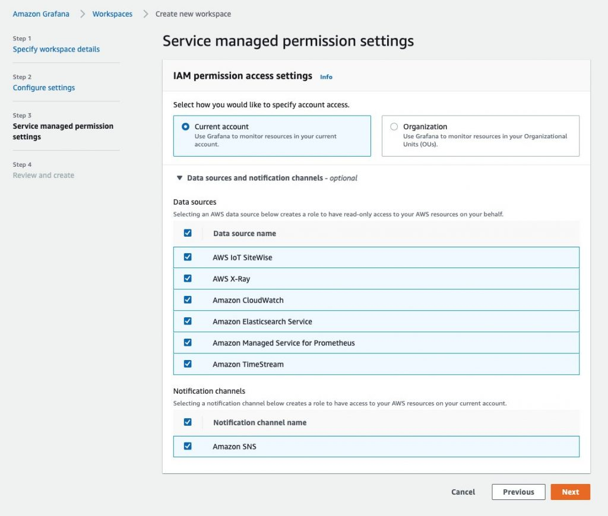

Using AWS Distro for OpenTelemetry in EKS on Fargate with Amazon Managed Service for Prometheus¶
Warning
This site is being merged into the broader Observability Best Practices content. Please head over there for the latest updates, plus prescriptive guidance on the use of AWS observability tools.
Warning
This site will be kept as-is until January 2023, when it will be decommissioned.
In this recipe we show you how to instrument a sample Go application and use AWS Distro for OpenTelemetry (ADOT) to ingest metrics into Amazon Managed Service for Prometheus . Then we're using Amazon Managed Grafana to visualize the metrics.
We will be setting up an Amazon Elastic Kubernetes Service (EKS) on AWS Fargate cluster and use an Amazon Elastic Container Registry (ECR) repository to demonstrate a complete scenario.
Note
This guide will take approximately 1 hour to complete.
Infrastructure¶
In the following section we will be setting up the infrastructure for this recipe.
Architecture¶
The ADOT pipeline enables us to use the ADOT Collector to scrape a Prometheus-instrumented application, and ingest the scraped metrics to Amazon Managed Service for Prometheus.
The ADOT Collector includes two components specific to Prometheus:
- the Prometheus Receiver, and
- the AWS Prometheus Remote Write Exporter.
Info
For more information on Prometheus Remote Write Exporter check out: Getting Started with Prometheus Remote Write Exporter for AMP.
Prerequisites¶
- The AWS CLI is installed and configured in your environment.
- You need to install the eksctl command in your environment.
- You need to install kubectl in your environment.
- You have Docker installed into your environment.
Create EKS on Fargate cluster¶
Our demo application is a Kubernetes app that we will run in an EKS on Fargate
cluster. So, first create an EKS cluster using the
provided cluster-config.yaml
template file by changing <YOUR_REGION> to one of the
supported regions for AMP.
Make sure to set <YOUR_REGION> in your shell session, for example, in Bash:
export AWS_DEFAULT_REGION=<YOUR_REGION>
Create your cluster using the following command:
eksctl create cluster -f cluster-config.yaml
Create ECR repository¶
In order to deploy our application to EKS we need a container repository.
You can use the following command to create a new ECR repository in your account.
Make sure to set <YOUR_REGION> as well.
aws ecr create-repository \
--repository-name prometheus-sample-app \
--image-scanning-configuration scanOnPush=true \
--region <YOUR_REGION>
Set up AMP¶
First, create an Amazon Managed Service for Prometheus workspace using the AWS CLI with:
aws amp create-workspace --alias prometheus-sample-app
Verify the workspace is created using:
aws amp list-workspaces
Info
For more details check out the AMP Getting started guide.
Set up ADOT Collector¶
Download adot-collector-fargate.yaml and edit this YAML doc with the parameters described in the next steps.
In this example, the ADOT Collector configuration uses an annotation (scrape=true)
to tell which target endpoints to scrape. This allows the ADOT Collector to distinguish
the sample app endpoint from kube-system endpoints in your cluster.
You can remove this from the re-label configurations if you want to scrape a different sample app.
Use the following steps to edit the downloaded file for your environment:
1. Replace <YOUR_REGION> with your current region.
2. Replace <YOUR_ENDPOINT> with the remote write URL of your workspace.
Get your AMP remote write URL endpoint by executing the following queries.
First, get the workspace ID like so:
YOUR_WORKSPACE_ID=$(aws amp list-workspaces \
--alias prometheus-sample-app \
--query 'workspaces[0].workspaceId' --output text)
Now get the remote write URL endpoint URL for your workspace using:
YOUR_ENDPOINT=$(aws amp describe-workspace \
--workspace-id $YOUR_WORKSPACE_ID \
--query 'workspace.prometheusEndpoint' --output text)api/v1/remote_write
Warning
Make sure that YOUR_ENDPOINT is in fact the remote write URL, that is,
the URL should end in /api/v1/remote_write.
After creating deployment file we can now apply this to our cluster by using the following command:
kubectl apply -f adot-collector-fargate.yaml
Info
For more information check out the AWS Distro for OpenTelemetry (ADOT) Collector Setup.
Set up AMG¶
Set up a new AMG workspace using the Amazon Managed Grafana – Getting Started guide.
Make sure to add "Amazon Managed Service for Prometheus" as a datasource during creation.

Application¶
In this recipe we will be using a sample application from the AWS Observability repository.
This Prometheus sample app generates all four Prometheus metric types
(counter, gauge, histogram, summary) and exposes them at the /metrics endpoint.
Build container image¶
To build the container image, first clone the Git repository and change into the directory as follows:
git clone https://github.com/aws-observability/aws-otel-community.git && \
cd ./aws-otel-community/sample-apps/prometheus
First, set the region (if not already done above) and account ID to what is applicable in your case.
Replace <YOUR_REGION> with your current region. For
example, in the Bash shell this would look as follows:
export AWS_DEFAULT_REGION=<YOUR_REGION>
export ACCOUNTID=`aws sts get-caller-identity --query Account --output text`
Next, build the container image:
docker build . -t "$ACCOUNTID.dkr.ecr.$AWS_DEFAULT_REGION.amazonaws.com/prometheus-sample-app:latest"
Note
If go mod fails in your environment due to a proxy.golang.or i/o timeout,
you are able to bypass the go mod proxy by editing the Dockerfile.
Change the following line in the Docker file:
RUN GO111MODULE=on go mod download
RUN GOPROXY=direct GO111MODULE=on go mod download
Now you can push the container image to the ECR repo you created earlier on.
For that, first log in to the default ECR registry:
aws ecr get-login-password --region $AWS_DEFAULT_REGION | \
docker login --username AWS --password-stdin \
"$ACCOUNTID.dkr.ecr.$AWS_DEFAULT_REGION.amazonaws.com"
And finally, push the container image to the ECR repository you created, above:
docker push "$ACCOUNTID.dkr.ecr.$AWS_DEFAULT_REGION.amazonaws.com/prometheus-sample-app:latest"
Deploy sample app¶
Edit prometheus-sample-app.yaml
to contain your ECR image path. That is, replace ACCOUNTID and AWS_DEFAULT_REGION in the
file with your own values:
# change the following to your container image:
image: "ACCOUNTID.dkr.ecr.AWS_DEFAULT_REGION.amazonaws.com/prometheus-sample-app:latest"
Now you can deploy the sample app to your cluster using:
kubectl apply -f prometheus-sample-app.yaml
End-to-end¶
Now that you have the infrastructure and the application in place, we will test out the setup, sending metrics from the Go app running in EKS to AMP and visualize it in AMG.
Verify your pipeline is working¶
To verify if the ADOT collector is scraping the pod of the sample app and ingests the metrics into AMP, we look at the collector logs.
Enter the following command to follow the ADOT collector logs:
kubectl -n adot-col logs adot-collector -f
One example output in the logs of the scraped metrics from the sample app should look like the following:
...
Resource labels:
-> service.name: STRING(kubernetes-service-endpoints)
-> host.name: STRING(192.168.16.238)
-> port: STRING(8080)
-> scheme: STRING(http)
InstrumentationLibraryMetrics #0
Metric #0
Descriptor:
-> Name: test_gauge0
-> Description: This is my gauge
-> Unit:
-> DataType: DoubleGauge
DoubleDataPoints #0
StartTime: 0
Timestamp: 1606511460471000000
Value: 0.000000
...
Tip
To verify if AMP received the metrics, you can use awscurl.
This tool enables you to send HTTP requests from the command line with AWS Sigv4 authentication,
so you must have AWS credentials set up locally with the correct permissions to query from AMP.
In the following command replace $AMP_ENDPOINT with the endpoint for your AMP workspace:
$ awscurl --service="aps" \
--region="$AWS_DEFAULT_REGION" "https://$AMP_ENDPOINT/api/v1/query?query=adot_test_gauge0"
{"status":"success","data":{"resultType":"vector","result":[{"metric":{"__name__":"adot_test_gauge0"},"value":[1606512592.493,"16.87214000011479"]}]}}
Create a Grafana dashboard¶
You can import an example dashboard, available via prometheus-sample-app-dashboard.json, for the sample app that looks as follows:

Further, use the following guides to create your own dashboard in Amazon Managed Grafana:
That's it, congratulations you've learned how to use ADOT in EKS on Fargate to ingest metrics.
Cleanup¶
First remove the Kubernetes resources and destroy the EKS cluster:
kubectl delete all --all && \
eksctl delete cluster --name amp-eks-fargate
Remove the Amazon Managed Service for Prometheus workspace:
aws amp delete-workspace --workspace-id \
`aws amp list-workspaces --alias prometheus-sample-app --query 'workspaces[0].workspaceId' --output text`
Remove the IAM role:
aws delete-role --role-name adot-collector-role
Finally, remove the Amazon Managed Grafana workspace by removing it via the AWS console.